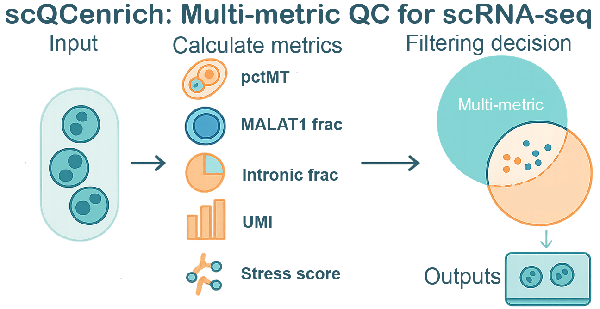

scQCenrich is an advanced, annotation-aware quality control framework for single-cell RNA-seq (scRNA-seq) data. It goes beyond simple static thresholds by integrating multi-metric filtering—including standard Seurat metrics and optional spliced/unspliced ratios from droplet data. scQCenrich has the option to automatically handles doublets, performs cell-type auto-annotation, and uniquely emphasizes the rescue of biologically meaningful, cohesive clusters that may otherwise be incorrectly flagged as ‘low quality’ by basic filters.
Installation
You can install the development version of scQCenrich from GitHub with:
install.packages("BiocManager")
remotes::install_github(
"lemonlyy755/scQCenrich",
dependencies = TRUE,
repos = BiocManager::repositories()
)
vignettes:
install.packages(c("knitr","rmarkdown"))
if (!requireNamespace("BiocManager", quietly = TRUE)) install.packages("BiocManager")
remotes::install_github(
"lemonlyy755/scQCenrich",
dependencies = TRUE,
build_vignettes = TRUE,
repos = BiocManager::repositories()
)
browseVignettes("scQCenrich")Example use
This is a basic usage example
Note: SeuratWrappers does not work in windows os.
library(scQCenrich)
library(Seurat)
library(SeuratWrappers)
seurat_std <- CreateSeuratObject(counts = Read10X("your filtered count folder path"))
seurat_sp <- as.Seurat(ReadVelocity(file = 'your velocyto loom file.loom'))
res <- run_qc_pipeline(
obj = seurat_std,
species = "human", # edit your species: mouse or human
annot_method = "marker_score",
tissue = c("Blood", "Immune system"), # replace with the tissue(s) matching your dataset
spliced_obj = seurat_sp,
unspliced_obj = seurat_sp,
report_file = "qc_outputs/qc_report.html"
)
browseURL(res$report)Annotation tissue selection
When you use annot_method = "marker_score", setting tissue correctly is important for specific PanglaoDB-based cell labels. On PBMC-like immune data, broad or missing tissue selection can blur closely related populations such as monocytes vs dendritic cells or NK cells vs gamma delta T cells.
If you pass an unrecognised tissue name, run_qc_pipeline() warns and annotation falls back to all tissues, which is less specific. Use list_panglao_tissues() to see the supported PanglaoDB tissue names:
Examples:
- PBMC / whole blood:
tissue = c("Blood", "Immune system") - Cardiac data:
tissue = "Heart"
Loom Example
This is a basic example to convert velocyto loom file into seurat obj rds to be used in windows OS setting:
Note: this step cannot be done in windows.
library(Seurat)
library(velocyto.R)
library(SeuratWrappers)
ldat <- ReadVelocity(file = '/path/to/your/loomfile.loom')
# 1) Ensure unique feature names within each layer
for (nm in intersect(names(ldat), c("spliced","unspliced","ambiguous"))) {
rn <- rownames(ldat[[nm]])
rn[is.na(rn) | rn == ""] <- paste0("gene_", seq_along(rn))
rownames(ldat[[nm]]) <- make.unique(rn) # enforce uniqueness
}
# 2) Keep only the shared features across layers and align their order
has_layer <- intersect(names(ldat), c("spliced","unspliced","ambiguous"))
features <- Reduce(intersect, lapply(ldat[has_layer], rownames))
for (nm in has_layer) {
ldat[[nm]] <- ldat[[nm]][features, , drop = FALSE]
}
# 3) Ensure cell barcodes are unique and aligned across layers
cells <- Reduce(intersect, lapply(ldat[has_layer], colnames))
stopifnot(length(cells) > 0)
for (nm in has_layer) {
# If your loom has duplicate barcodes (rare), make them unique
cn <- colnames(ldat[[nm]])
if (anyDuplicated(cn)) colnames(ldat[[nm]]) <- make.unique(cn)
ldat[[nm]] <- ldat[[nm]][, cells, drop = FALSE]
}
# 4) Convert to Seurat (v5)
bm <- as.Seurat(ldat) # should now pass without the LogMap error
saveRDS(bm,"testloom.rds")Using the Toy Dataset
scQCenrich comes bundled with a small toy dataset (toy_seu) that you can use to immediately test out the pipeline:
library(scQCenrich)
# Load the built-in toy Seurat object
data("toy_seu")
print(toy_seu)
# Run the QC pipeline on the toy dataset
res_toy <- run_qc_pipeline(
obj = toy_seu,
species = "human",
method = "gmm",
qc_strength = "auto",
report_file = "qc_outputs/toy_qc_report.html"
)
browseURL(res_toy$report)Profiling scQCenrich Against Other Methods
If you wish to compare scQCenrich’s performance against standard metrics, you can write a short benchmarking script. The snippet below highlights how one might track which cells are retained across different methodologies: complete benchmarking script can be found in inst/benchmarking.r
library(scQCenrich)
library(Seurat)
library(ggplot2)
# Assuming 'seu' is your starting Seurat object.
# 1. Base Seurat thresholding
seu$keep_seurat <- with(seu@meta.data,
nFeature_RNA > 200 & nFeature_RNA < 10000 & percent.mt < 10)
# 2. scQCenrich (with just GMM auto-thresholding on basic metrics)
metrics <- calcQCmetrics(obj = seu, species = "human", add_to_meta = FALSE)
scQC_res <- flagLowQuality(metrics = metrics, method = "gmm", qc_strength = "auto")
seu$keep_scQC <- scQC_res$qc_status != "remove"
# You can then cross-tabulate retention rates
table(Seurat = seu$keep_seurat, scQC = seu$keep_scQC)
# Or visualize retention per cluster/cell_type
# (Assuming your object has a 'cell_type' or 'seurat_clusters' column)
retention_df <- data.frame(
CellType = seu$cell_type,
Seurat_Retained = seu$keep_seurat,
scQC_Retained = seu$keep_scQC
)
# ... grouping and ggplot logic similar to standard analysesMain Features
run_qc_pipeline() – one-liner wrapper for the full QC workflow with plots and reports.
Vignettes
See the package vignettes for detailed tutorials